There are a few mesh primitives generators.
Box
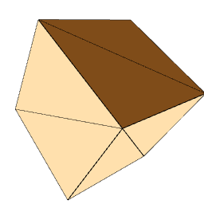
Figure 1. Box
Rounded RoundedBox
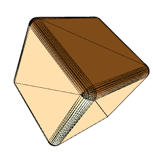
Figure 2. Rounded Box
See Procedural::RoundedBoxGenerator
Sphere
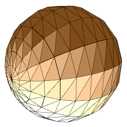
Figure 3. Sphere
See Procedural::SphereGenerator
IcoSphere
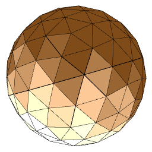
Figure 4. Ico Sphere
Icosphere is visually quite close from Sphere, but has a quite different repartition of the triangles.
See Procedural::IcoSphereGenerator
Torus
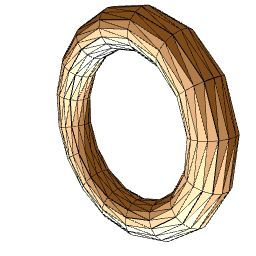
Figure 5. Torus
See Procedural::TorusGenerator
TorusKnot
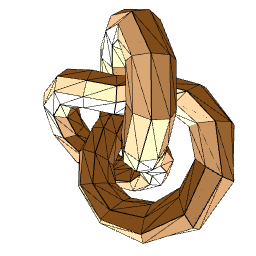
Figure 6.TorusKnot
See Procedural::TorusKnotGenerator
Cylinder
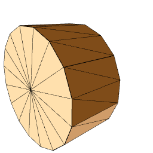
Figure 7.Cylinder
See Procedural::CylinderGenerator
Cone
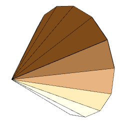
Figure 8. Cone
Tube
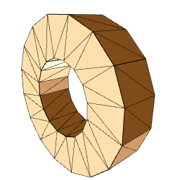
Figure 9. Tube
Capsule

Figure 10. Capsule
See Procedural::CapsuleGenerator
Spring

Figure 11. Spring
See Procedural::SpringGenerator
Plane
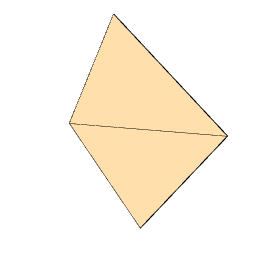
Figure 12. Plane
See Procedural::PlaneGenerator
Prism
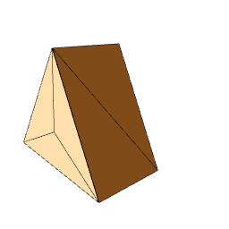
Figure 13a. Prism {3}
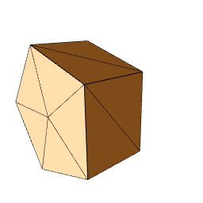
Figure 13b. Prism {5}
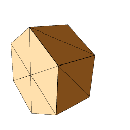
Figure 13c. Prism {6}